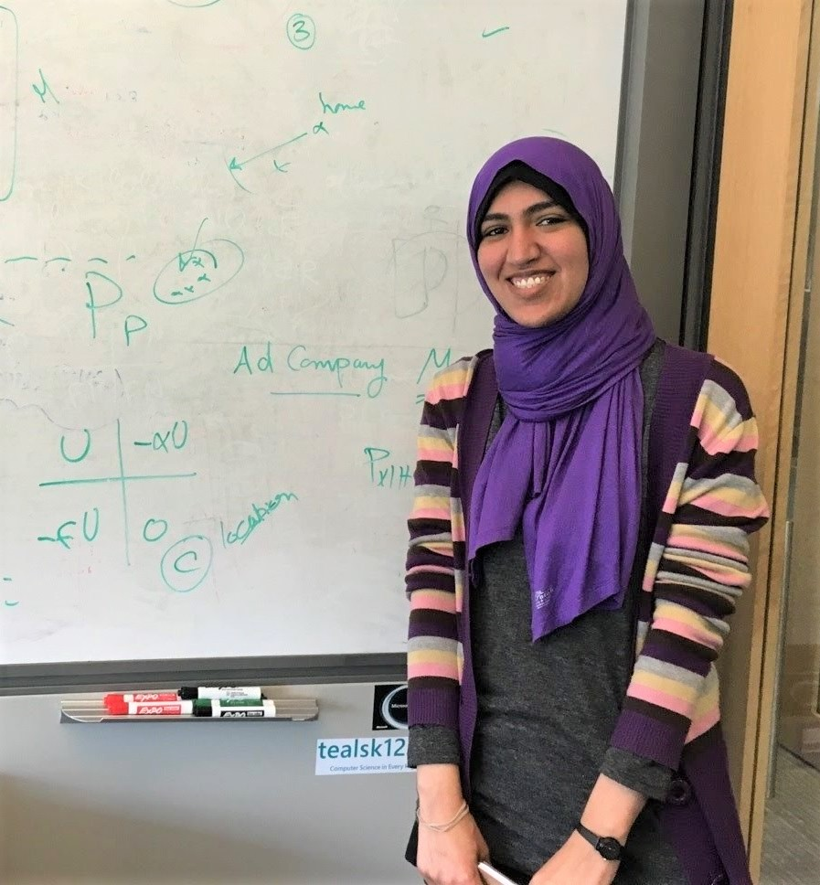

I am Heba Aly, a research scientist at Amazon. I got my PhD in Computer Science from the University of Maryland, College Park in 2019. My main research interests include spatial systems, intelligent systems and mobile/ubiquitous computing.
In my research, I focus on challenging problems with applicable real-world utility. I.e. while my research solves fundamental problems in mobile computing and spatial systems, it also addresses real-world problems covering diverse application domains including delivery logistics, health-care, intelligent transportation systems, and geo-target advertising, among others.

Latest News
| Jul'21 | Conference paper has been accepted in Amazon CSS'21 for an oral talk (Acceptance rate: 5%)! | |
| Jun'21 | Teaser for IEEE SECON'21 paper (AccessMap): video | |
| Jun'21 | Serving as a TPC member in ACM SIGSPATIAL'21 | |
| May'21 | Conference paper has been accepted in IEEE SECON'21! | |
| Apr'21 | Serving as a TPC member in Grace Hopper 2021 | |
| Feb'21 | Serving as a TPC member in IEEE MDM 2021 | |
| Feb'21 | Serving in the N2Women 2021 board | |
| Jul'20 | Panelist in the IEEE MDM PhD forum! | |
| May'20 | Serving as a TPC member in ACM SIGSPATIAL'20 | |
| Mar'20 | Invited talk at Brandeis University. | |
| Feb'20 | Serving in the N2Women 2020 board | |
| Dec'19 | Officially a Doctor | |
| Oct'19 | Paper invited for publication in Communications of ACM (CACM) Research Highlights! | |
| Oct'19 | Serving as a TPC member in IEEE MDM 2020 | |
| Oct'19 | Started as a research scientist at Amazon! | |
| July'19 | Selected to participate in Rising Stars in EECS 2019 | |
| July'19 | Serving as a TPC member in GEOProcessing 2020 | |
| June'19 | Invited talk at Amazon | |
| June'19 | Invited talk at lehigh | |
| May'19 | Serving as a PC member in ACM SIGSPATIAL'19 | |
| March'19 | Journal paper has been accepted for publication in ACM TSAS! | |
| March'19 | Invited talk at UC Merced | |
| March'19 | Invited talk at UC Irvine | |
| Feb.'19 | Invited talk at Penn State | |
| Nov.'18 | Awarded best paper runner up in ACM SIGSPATIAL'18 | |
| Nov.'18 | Passed my PhD Proposal Exam! | |
| Oct.'18 | Paper selected as best paper candidate in ACM SIGSPATIAL'18! | |
| Oct.'18 | Selected for the NSF grant to attend ACM SIGSPATIAL'18 in Seattle! | |
| Sept.'18 | Journal paper has been accepted for publication in the IEEE Sensors Journal! | |
| Sept.'18 | Conference paper has been accepted in Mobiquitous'18! | |
| Aug.'18 | Conference paper has been accepted in ACM SIGSPATIAL'18! | |
| Aug.'18 | Participating in Microsoft Research Principles of Intelligence! | |
| April'18 | A new granted patent with Prof. Moustafa Youssef! | |
| March'18 | Participating in the annual Women in Research Lean in Event @Facebook! |
Projects Honors and Awards
| 2019 | - Paper invited for publication in Communications of ACM (CACM) Research Highlights |
| 2018 | - Best paper runner up award in ACM SIGSPATIAL'18 - ACM TSAS Special issue paper invitation |
| 2016 | - Best poster award in N2Women workshop at ACM MobiCom 2016 |
| 2015 | - First Prize Group Category in the COMESA Innovation Awards - IEEE PerCom top paper invitation for a special issue at Pervasive and Mobile Computing Journal |
| 2013 | - Best paper award in ACM SIGSPATIAL - International Journal on Ambient Intelligence and Computing invitation for a special issue |
Scholarships/Grants and Honors
| 2019 | - Selected to participate in Rising Stars in EECS at UIUC |
| 2018 | - NSF Travel Grant Award (ACM SIGSPATIAL) |
| 2017 | - Selected as one of ten Rising Stars in Networking and Communications by N2Women - Google Women Techmakers scholarship - Google Grace Hopper Travel Grant - NSF Travel Grant Award (ACM SIGSPATIAL) |
| 2016 | - University of Maryland Graduate School Dean's Fellowship - NSF Travel Grant Award (IEEE INFOCOM) - N2Women Travel Grant (ACM MobiCom) |
| 2015 | - N2Women Young Researcher Fellowship - University of Maryland Graduate School Dean's Fellowship - NSF Travel Grant Award (ACM SIGSPATIAL) - IEEE Student Travel Grant (IEEE PerCom) |
| 2014 | - Certificate of Appreciation and a Prize from Umm Al-Qura University - Google Student Travel Grant Award (ACM SIGSPATIAL) - IEEE Communications Society Student Travel Grant (IEEE SECON) |
| 2011 | - Degree of Honor from Faculty of Engineering, Alexandria University |
Professional Services
Technical Program Committee
| 2021 | ACM SIGSPATIAL, IEEE MDM, Grace Hopper |
| 2020 | ACM SIGSPATIAL, IEEE MDM, GEOProcessing |
| 2019 | ACM SIGSPATIAL |
Reviewer
| 2021 | IEEE TMC, IEEE TKDE, PMC, IEEE IoT |
| 2020 | Amazon's Machine Learning Conference (AMLC), IEEE TMC, PMC, IEEE Sensors Journal, IEEE T-ITS, IEEE TVT, ACM IMWUT (UbiComp) |
| 2019 | IEEE TKDE, IEEE TMC, IEEE Sensors Journal, IEEE the Computer Journal, IEEE Internet of Things Journal, IEEE T-ITS, IEEE TVT, ACM IMWUT (UbiComp) | 2018 | IEEE TMC, IEEE TVT, IEEE T-ITS, Journal of Field Robotics, PMC, Journal of Ambient Intelligence and Humanized Computing, ACM TSAS, IEEE TKDE |
| 2017 | IEEE SECON, ACM CHI, IEEE TMC, IEEE ICDCS, ACM TSAS, ACM IMWUT (UbiComp), IEEE T-ITS |
| 2016 | IEEE INFOCOM'17, IEEE TMC, ACM TOSN, IEEE VTC-Fall'16, IET Intelligent Transport Sys., KSII Trans. on Internet and Information Sys., IEEE Sensors Journal |
| 2015 | IEEE TVT, Expert Systems with Applications (ESWA)|Elsevier Journal |
| 2014 | IEEE MDM 2014 |
Volunteer
| 2014, 2015, 2017, 2018 | Student volunteer at ACM SIGSPATIAL |
| 2016 | Organizer for the N2Women event at IEEE INFOCOM |